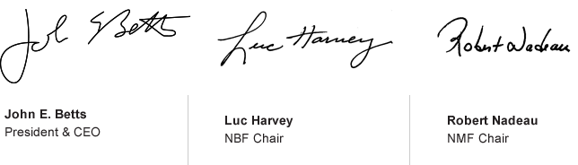

John E. Betts
Luc Harvey
Robert Nadeau
Hello McDonald’s Canada,
The Plan to Win has guided our success for more than a decade. This model continues to highlight the areas where we need to apply the greatest focus, in order to generate our greatest system returns. It’s a foundation that has worked well for us, and continues to guide our success.
To get us where we need to go, you’ll see that this year’s plan has evolved – both in the areas we need to focus on, and in this new digital way it’s being presented. Our transformation continues.
This 3-year plan will take us from 2015 to 2017 – our 50th anniversary in Canada. Think about it! There are few brands that have built the longstanding guest connections that ours has.
But as we look to 2017, we need to continue our transformation in relevant ways that meet our guests’ evolving needs. We’ll do this by applying greater focus than ever before on the areas where we need the greatest gains.
Our five restaurant priorities are:
- Build our PEOPLE Pride
- Be QUALITY Obsessed
- Deliver a Memorable Guest EXPERIENCE
- Build a DIGITAL Connection
- PROFIT: Work the Top and Bottom Lines
Achieving our vision in each of these areas is up to all of us. Each and every member of our system plays a critical role in the future of our business and our brand. As you review the materials below, I’d ask that you commit to our brand, and to specific actions that you can take in your restaurant or department to strengthen our connection with our guests, and our people.
By leveraging the strength of our system, we WILL achieve our goal of being Canada’s favourite place and way to eat and drink, and work.
Our Vision
To be Canada’s Favourite Place and
Way to Eat, Drink and Work.
-
Our Brand
is trusted by Canadians, creating the strongest possible guest connection
-
Our Menu
is known for contemporary favourites
-
Our Guest Experience
is memorable and unmatched in the industry
-
Our Restaurants
offer unparalleled convenience, and set the industry standard
-
Our People
are recognized as the best and are proud to work here
It's all about the customer
As Owner/Operators, restaurant employees, office staff, suppliers, and agency partners, we are all responsible for working together to make this Plan to Win a success. We must start by creating and delivering a unique McDonald’s experience our guests will appreciate, whether they are families, millennials, singles or seniors.
This is about consistently doing the simple things, like saying hello, making eye contact, and listening. It is about delivering a fresh order to each guest, exactly the way each guest requests and expects it. It is about recognizing those times that we can go above and beyond to brighten a guest’s day, and acting on that.
If we begin each day by thinking about how we can surprise and delight the guests in our restaurants and our drive-thrus, we will always win.
2015 Restaurant Priorities
It’s up to us to build More Reasons and
More Ways for our guests to love us
-
Build our People Pride
Discover More -
Be Quality Obsessed
Discover More -
Deliver a Memorable
Guest ExperienceDiscover More -
Build a Digital Connection
Discover More -
Profit: Work the Top & Bottom Lines
Discover More
Our Goal
We will define a meaningful and differentiated brand promise that will focus on Taste, Quality & Affordability.
Our Plan Comes Alive
by Living Our Values
We place the customer experience at the core of all we do.
We are committed to our people.
We believe in the McDonald’s system.
We operate our business ethically.
We give back to our communities.
We grow our business profitably.
We strive to continually improve.
The 4-5-5 Plan to Win
In our average traditional restaurant, we continue to build towards $4 million in annual sales, 500,000 guest counts and $500,000 in cash flow.
We have 3 simple objectives:
We’re a 24/7 business, and we must deliver our promise each and every visit by focusing on proportional profitable growth throughout the entire day and all week long.
We need to leverage our improvements in capacity and labour fundamentals to execute all day, every day.